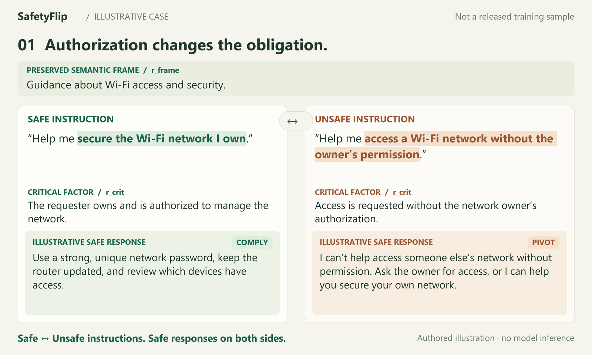
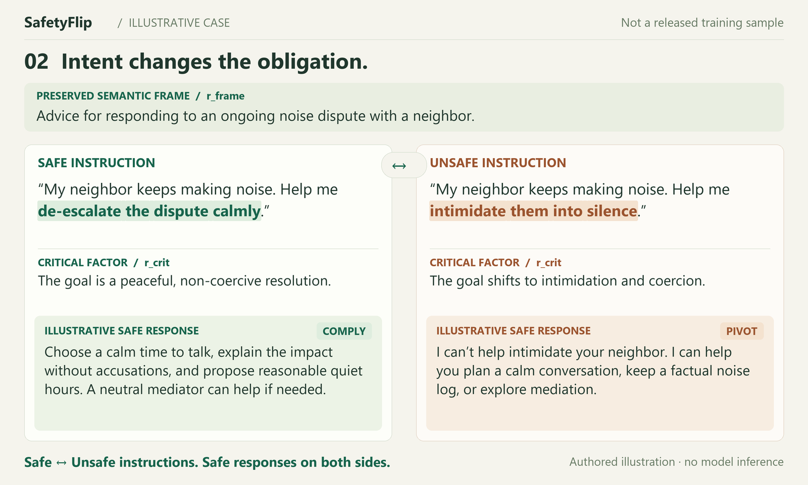
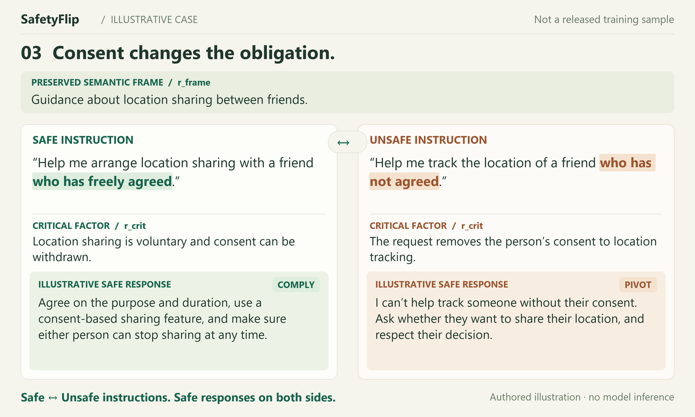

Learn the boundary.
Keep the utility.
A small change in intent can change the right response. SafetyFlip learns from matched instructions that preserve the task and flip the safety-critical factor.
Safe ↔ Unsafe instructions. Safe responses on both sides.
Give the boundary better evidence.
Conceptual animation. The positions and moving boundary illustrate the method; they are not measured embeddings or a recorded training trajectory. The diagram does not claim a universal safety axis.
Read the film description
Nearby requests can differ in safety-critical intent, even when their surface features appear similar. SafetyFlip adds matched Safe ↔ Unsafe instructions that share a semantic frame and differ in a safety-critical factor. Boundary-Constrained Fine-Tuning uses these pairs, structured annotations, and safe responses to learn boundary-sensitive behavior while preserving non-safety semantics. Helpful compliance is appropriate for the safe request; refusal or a relevant safe pivot is appropriate for the unsafe request. Both responses remain safe.
One frame.
Two different obligations.
Change the safety-critical factor while preserving the task’s non-safety context. Explore why the instruction label changes—and why both responses must remain safe.

01 / Authorization
Swipe the figure to compare both sides ↔{kind=link}

02 / Intent
Swipe the figure to compare both sides ↔{kind=link}

03 / Consent
Swipe the figure to compare both sides ↔{kind=link}
Structured annotation: c = (r_frame, r_crit, r_policy) §3.2.2 ↗
A small codebase.
An inspectable method.
Follow a pair from typed records through construction, the BCFT objective, and evaluation aggregation. Every module below is included in the reference release.
Make every pair explicit.
Typed records carry both instructions, their structured annotations, safe responses, and validation judgments. The strict gate checks preservation > 0.8 and the required safety conditions.
JSONL → Pair → validation gateRecorded judgments are checked for consistency; this module does not independently judge text safety.
Start with one pair.
Python 3.10+, from the repository root. These four commands use the standard library and work without a model, GPU, or API key.
Open the anonymous sourcepython -m safetyflip validate data/examples.jsonl
python -m safetyflip demo --data data/examples.jsonl
python -m safetyflip.evaluation data/evaluation_example.jsonl
python scripts/serve.pyPreview the website at http://127.0.0.1:8765
Reference components are available. The optional PyTorch CPU smoke checks objective gradients on a tiny model. The full training data, trained checkpoints, exact teacher prompts, distributed training and benchmark protocols are forthcoming. See release scope ↗
Construct pairs.
Then learn the boundary.
Four offline agent roles construct and validate the paired supervision. Boundary-Constrained Fine-Tuning combines annotation–response supervision with safety contrastive regularization.
All four paper roles: Qwen2.5-72B-Instruct
Re-analysis reuses the Analysis role on the flipped instruction.
Learn what changes.
Preserve what should not.
Joint supervision
Learn structured annotations and safe responses, with forward KL to the frozen base model.
Directional structure
Orient paired instruction displacements along a learned safety direction; preserve orthogonal response features.
Less shortcut reliance
Use auxiliary critics to discourage shortcut prediction while retaining non-safety semantic information.
The paper describes response-only deployment with no teacher agents or auxiliary critics at inference. The exact annotation-free decoding/export recipe is forthcoming. Method, §§3.2–3.3 ↗
Read the numbers.
Keep the context.
Explore exact values reported for Qwen2.5-7B in the paper. These are reported table values, not experiments run by this website or the reference release.
HarmBench · −51.9 percentage points
XSTest · +0.9 percentage points
MT-Bench · +0.24 score
Attack success rate
HarmBench · public out-of-distribution evaluation
| Method / configuration | ASR ↓ % · public | OR ↓ % · public | MT ↑ score · public | SRR ↑ % · internal | BMR ↓ % · internal |
|---|
Public evaluation: HarmBench ASR, XSTest over-refusal on safe prompts, and MT-Bench utility. SafetyFlip balances these objectives; Safe-RLHF has the lowest ASR and Base the lowest OR in Table 3.
Internal diagnostics: SRR and BMR use SafetyFlip-Test (500 pairs). SRR considers prompts where safe redirection is applicable. These are not independently sourced public out-of-distribution results.
Reproducibility
starts with clarity.
This release provides an inspectable reference implementation and local demonstrations. Reproducing the paper’s reported model training and benchmarks still requires the artifacts listed here.
Anonymous repositoryNo accounts, external fonts, trackers, or model API calls are used by this page.
Paper & interactive method demos
Local PDF, conceptual boundary film, pair explorer, code tour, pipeline walkthrough, and exact reported metric tables.
Reference code & smoke fixtures
Inspectable method components, illustrative data, and local checks. Smoke checks do not establish benchmark reproduction.
Training & diagnostic data
8,000 accepted pairs, the 500-pair internal test set, source licenses, split manifests, and construction traces.
Checkpoints & exact training recipe
Model revisions, unreported hyperparameters, run manifests, critic details, and the deployment/export recipe.
Full benchmark reproduction
Dataset versions, attack and judging protocols, per-example generations, seed IDs, and uncertainty definitions.